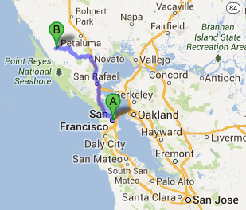
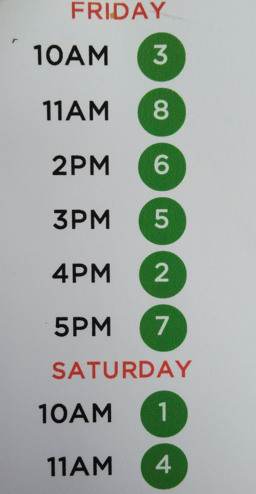
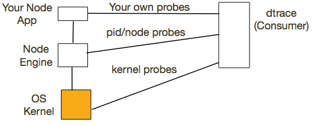
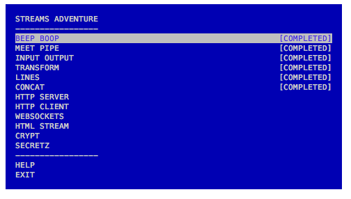
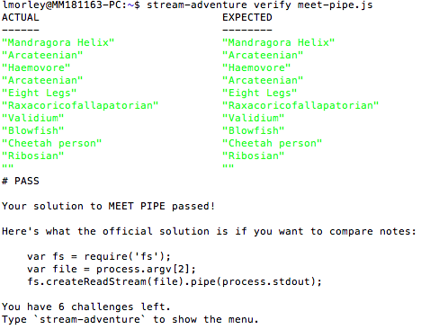

NodeConf 2013
Walker Creek Ranch
- An hour and 15 minutes north of San Francisco, CA
- Previously owned by Synanon cult, a drug rehab center of sorts
- Turtle Pond: kayaking, canoeing, swimming
- Cafeteria-style meals, bunks: pretty social
- Social/hacking hours: games, music, activities

NodeConf 2013
Not your typical conference
- In the middle of nowhere
- No keynotes, no tracks
- You attend all the talks
- More hacktime
- More social time
- Offered a "Significant Other" track
The Talks
- Domains error handling
- Johnny Five Arduino board control
- AR Drone code your own quadricopter
- Distributed Chat node.js chat server 2.0
- DTrace serious low-level debugging
- Contributing to Node-Core demystifying the source
- Express.js/Hapi.js evaluating framework options
- Streams everything is a Stream

Domains
- Dealing with uncaught exceptions in Node.js is not straightforward
- Domains provide a way to handle multiple different IO operations as a single group
- Currently classified as "unstable"
Johnny Five
- Open Source JavaScript Arduino programming framework
- Why JavaScript?
- These systems are "inherently reactionary in that they wait for some event or data and then do some thing"
- With other platforms, "the volume of code to create the reactionary system (including eventmachine/twisted/redis/pubsub/etc) quickly grows beyond simple hobbyist experimentation"
- optimizes for developer happiness
AR Drones
- An implementation of the networking protocols used by the Parrot AR Drone 2.0
- "the protocol can also be used to receive video and sensor data, enabling developers to write autonomous programs for the upcoming robot revolution"
AR Drones - Autonomous Droning
AR Drones - Control-a-Drone
Distributed Chat
Walk-through in writing a distributed chat system using Node. You kind of had to be there. Don't worry about it.*
*See me for the code if you're curious, though.
DTrace
- "dynamic trace"
- tool for troubleshooting kernel-/application-level problems in real time

- With DTrace, you can trace events in
- The node Engine
- Node.js scripts
- The kernel (system calls, scheduling, memory management, etc.)
Add probes to your Node app
Contributing to node-core
- Contributing to large open source projects is daunting
- Node.js is a daunting codebase spanning JavaScript and V8 C/C++ bindings
- See me if you're curious to know more
Web Services w/Node, Express, and Hapi
Web Services w/Node, Express, and Hapi
- Node : Ruby :: Express : Sinatra
- Adds support for middleware, basic auth, web-oriented shortcuts
- middleware is loaded sequentially
Web Services w/Node, Express, and Hapi
- From Walmart Labs (not Walmart)
- Configuration-based
- Input validation/authentication is built-in to routing
Streams

Streams are big in node. Reading and writing to STDIN/STDOUT, a file, or a socket are all done through streams. Also, these streams can be combined so that you can direct the output of one stream into the input of another. This can get pretty powerful but also a little confusing.
Streams: Meet Pipe (Success!)

Wrap-Up
- AAA+++ would go again
- The node.js community's approach is different/refreshing
- Not about solving the problem you already have, but about new approaches to problems you have yet to face
←
→
/
#